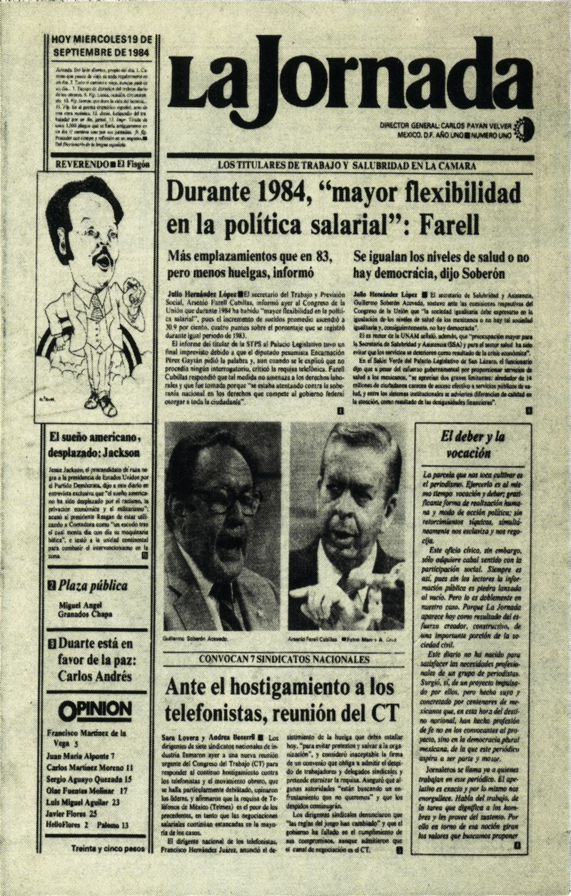
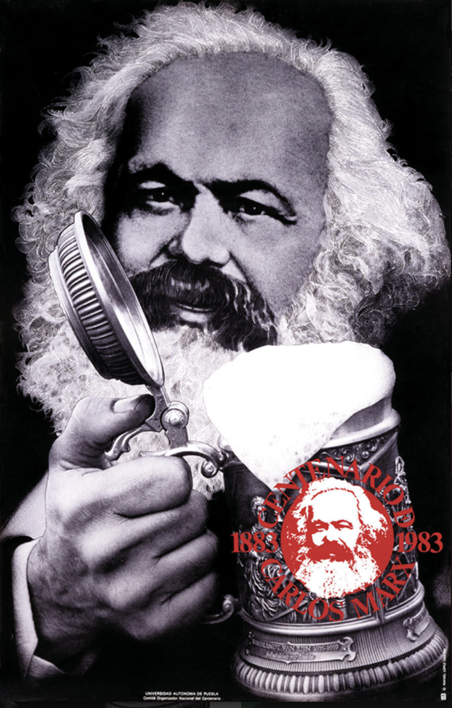
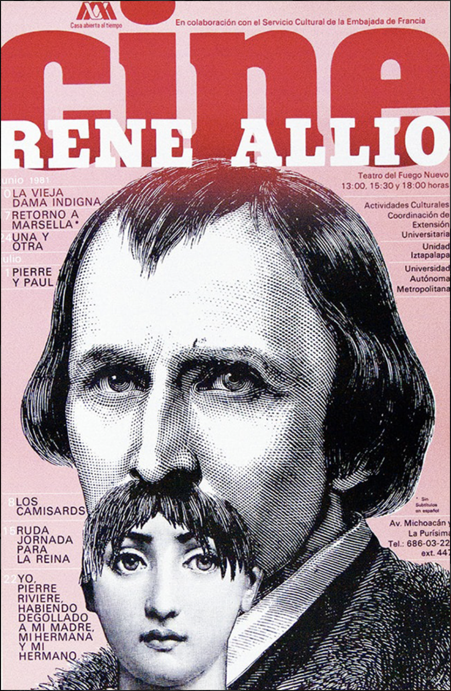
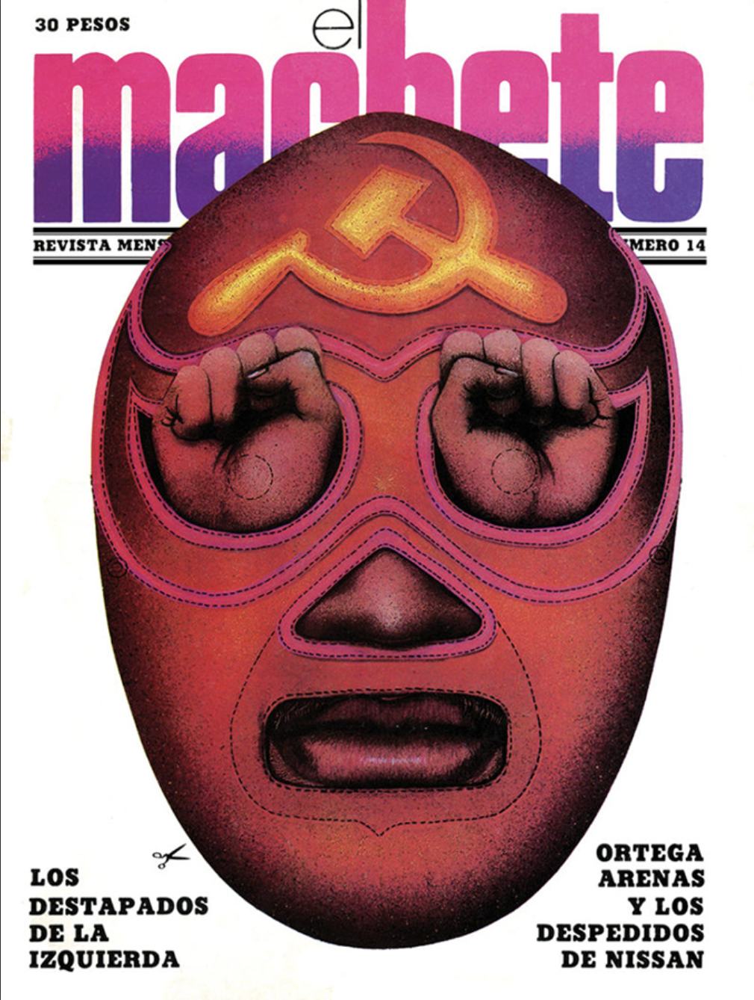
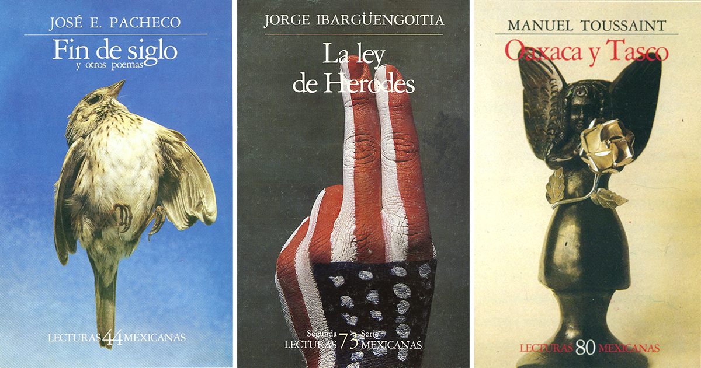
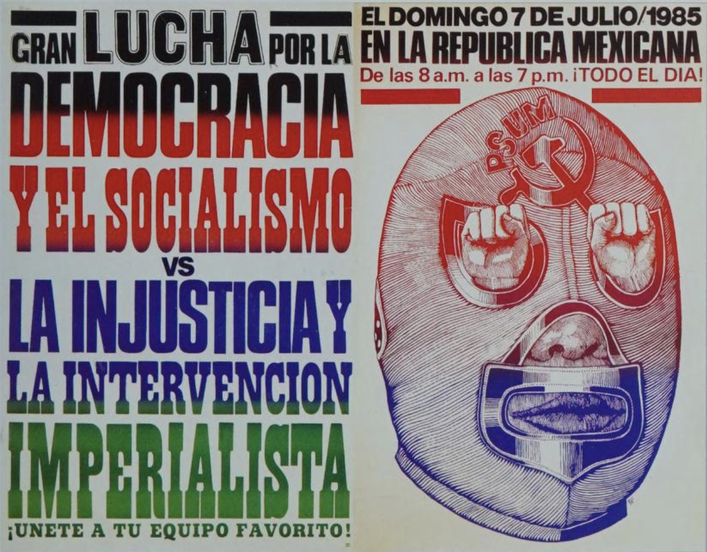
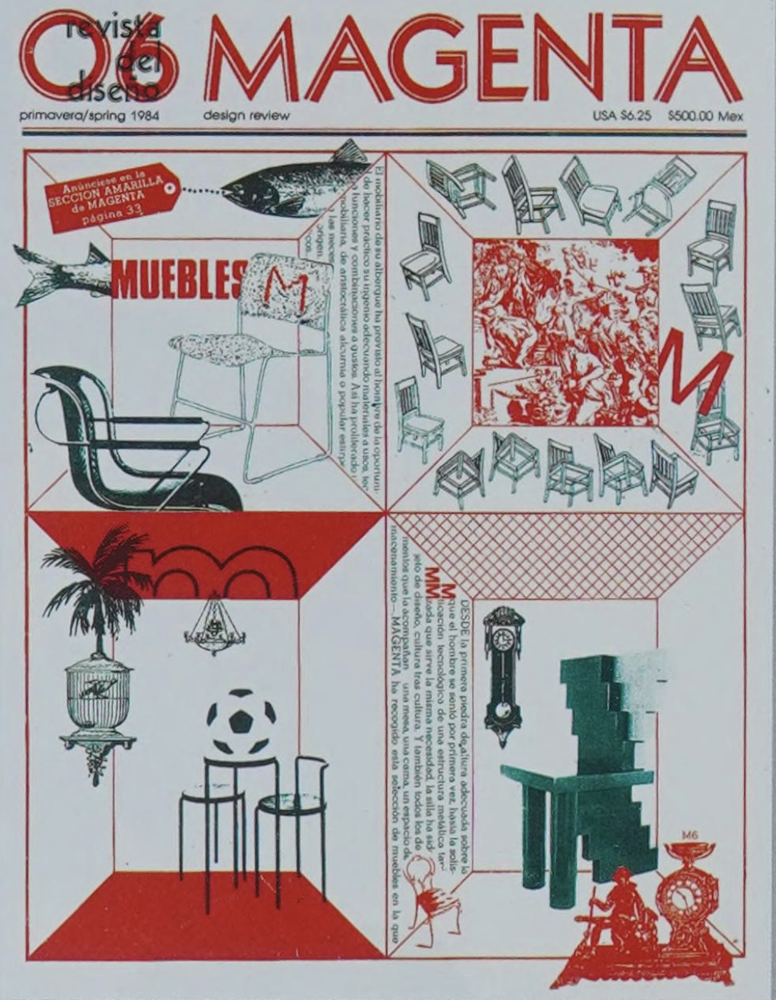
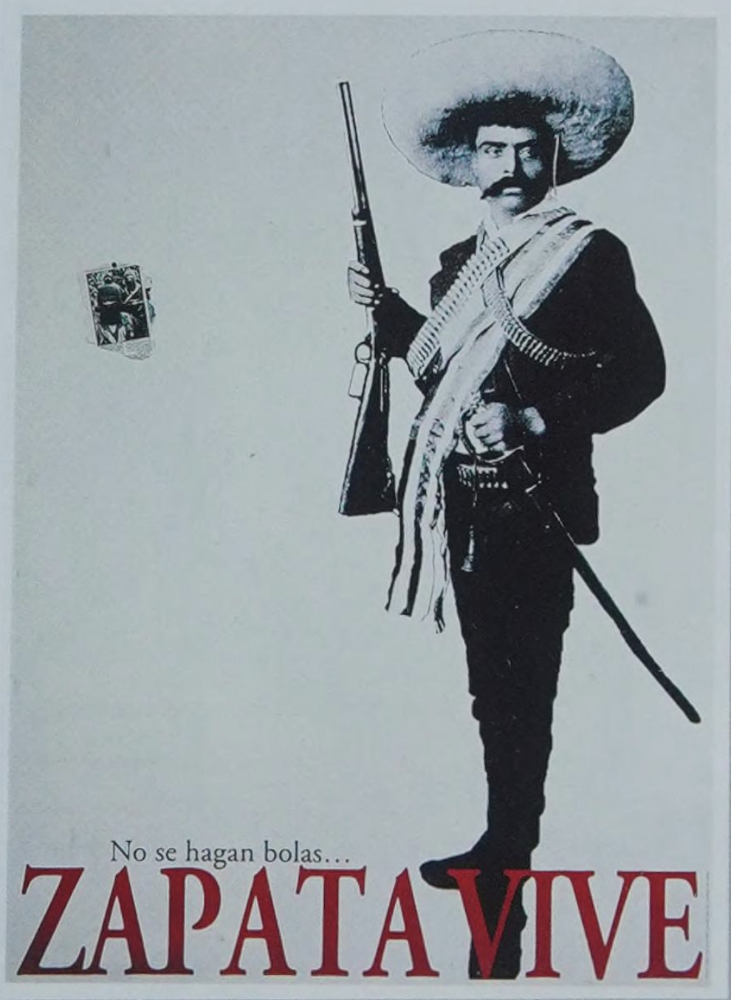
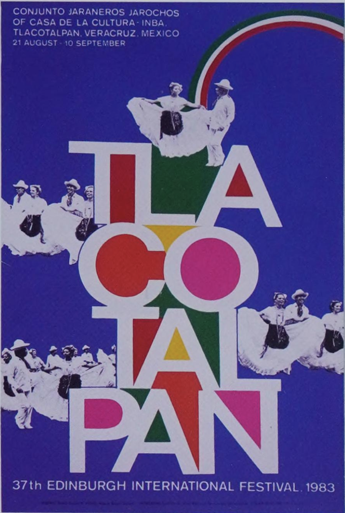
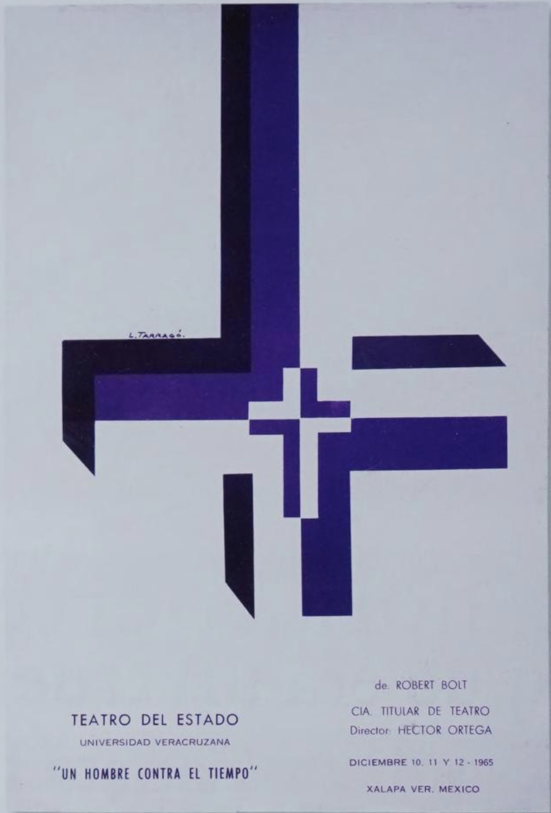
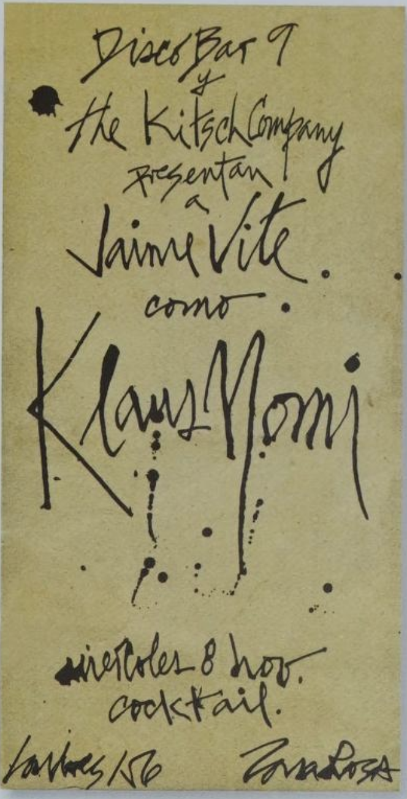
During the 1980s, graphic design in Mexico expanded into both cultural and commercial contexts. There was more experimentation with typography, illustration, and visual styles. Designers such as Vicente Rojo and Rafael López Castro contributed to this period through editorial work, posters, and visual communication that blended structure with more expressive approaches. Graphic design became more diverse, combining formal training with playful and experimental techniques.










